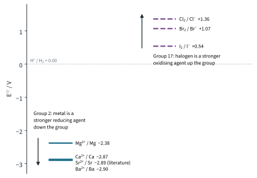
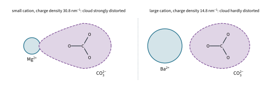
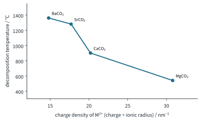
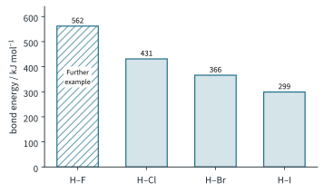

The Periodic Table 3
Topic 5 · The Periodic Table Part 3
On this page
Part 1 explained the physical trends down Groups 2 and 17 with one idea: each step down adds a shell. Part 3 uses the same idea for their chemistry. Group 2 metals lose electrons; Group 17 elements gain them. Down the group, losing gets easier and gaining gets harder.
Standard electrode potentials: just enough for now
Standard electrode potentials, E⦵, are covered fully in Topic 12. For now you only need to read them. Each value belongs to a half-equation written as a reduction (electrons on the left), and measures how readily the species on the left gains electrons, compared with hydrogen (E⦵ = 0.00 V):
- A large positive E⦵ (Cl2 + 2e− ⇌ 2Cl−, +1.36 V): Cl2 gains electrons readily, so it is a strong oxidising agent.
- A large negative E⦵ (Ba2+ + 2e− ⇌ Ba, −2.90 V): Ba2+ hardly gains electrons at all; the reverse change, Ba → Ba2+ + 2e−, is the one that happens readily, so Ba is a strong reducing agent. Fig 1 puts the two groups on one scale.

Group 2 metals as reducing agents
| Half-equation | E⦵ / V | IE1 + IE2 / kJ mol−1 |
|---|---|---|
| Mg2+(aq) + 2e− ⇌ Mg(s) | −2.38 | 736 + 1450 = 2186 |
| Ca2+(aq) + 2e− ⇌ Ca(s) | −2.87 | 590 + 1150 = 1740 |
| Sr2+(aq) + 2e− ⇌ Sr(s) | −2.891 | 548 + 1060 = 1608 |
| Ba2+(aq) + 2e− ⇌ Ba(s) | −2.90 | 502 + 966 = 1468 |
E⦵ becomes more negative down the group, so the metals become stronger reducing agents and more reactive: barium gives up its electrons most readily, magnesium least.
Why? Each Group 2 metal reacts by losing its two outer s electrons, M → M2+ + 2e−. Down the group the atoms are larger, so the outer electrons are further from the nucleus and more shielded. They are held less strongly, and the energy needed to remove both of them (IE1 + IE2) falls, from 2186 kJ mol−1 for Mg to 1468 kJ mol−1 for Ba.2
(Further example. You can see the trend in the reactions with water. Magnesium reacts only very slowly with cold water, but burns in steam with a bright white flame; calcium reacts steadily with cold water, the mixture turning cloudy because some of the calcium hydroxide, being only slightly soluble, comes out as a white solid; strontium reacts faster, and barium vigorously.)
Mg(s) + H2O(g) → MgO(s) + H2(g)
Ca(s) + 2H2O(l) → Ca(OH)2(aq) + H2(g)
Ba(s) + 2H2O(l) → Ba(OH)2(aq) + H2(g)
Group 17 elements as oxidising agents
| Half-equation | E⦵ / V |
|---|---|
| Cl2(aq) + 2e− ⇌ 2Cl−(aq) | +1.36 |
| Br2(aq) + 2e− ⇌ 2Br−(aq) | +1.07 |
| I2(aq) + 2e− ⇌ 2I−(aq) | +0.54 |
E⦵ becomes less positive down the group, so the halogens become weaker oxidising agents: chlorine is the strongest of the three, iodine the weakest.
Why? A halogen acts as an oxidising agent by gaining an electron into its outer shell. Down the group the atoms are larger, so the incoming electron is further from the nucleus and more shielded from it. It is attracted less strongly, so the halogen has less tendency to gain it. (The same reasoning gave the fall in electronegativity in Part 1.)
Displacement reactions
The trend shows up directly when a halogen is added to a solution of halide ions: a halogen oxidises the halide ions of any halogen below it in the group, displacing that halogen. Check each with E⦵cell = E⦵(oxidising agent) − E⦵(the halogen formed); a positive value means the reaction is feasible:
Cl2(aq) + 2Br−(aq) → 2Cl−(aq) + Br2(aq) (E⦵cell = 1.36 − 1.07 = +0.29 V)
Cl2(aq) + 2I−(aq) → 2Cl−(aq) + I2(aq) (E⦵cell = 1.36 − 0.54 = +0.82 V)
Br2(aq) + 2I−(aq) → 2Br−(aq) + I2(aq) (E⦵cell = 1.07 − 0.54 = +0.53 V)
The colours tell you what has formed. In water the colours of bromine and iodine can look alike, so the mixture is often shaken with hexane: the halogen moves into the upper (hexane) layer, where the colours are distinct:
| Halogen | In water | In hexane (upper layer) |
|---|---|---|
| Cl2 | pale yellow-green (almost colourless when dilute) | pale yellow-green |
| Br2 | yellow to orange | orange-red |
| I2 | brown | purple (violet) |
The halide solutions (e.g. KCl, KBr, KI) are colourless.
Worked example 1
Use E⦵ values to predict whether bromine water reacts with potassium chloride solution.
(To answer this, write the reaction that would have to happen, then find E⦵cell.) Br2 would have to oxidise Cl− to Cl2:
Br2(aq) + 2Cl−(aq) → 2Br−(aq) + Cl2(aq) (E⦵cell = 1.07 − 1.36 = −0.29 V)
E⦵cell is negative, so no reaction: the orange colour of the bromine remains. Bromine is a weaker oxidising agent than chlorine and cannot displace it.
(Further example. Fluorine, F2 + 2e− ⇌ 2F−, E⦵ = +2.87 V, is the strongest oxidising agent of all. It is not used for displacement in water, because it oxidises the water itself: 2F2(g) + 2H2O(l) → 4HF(aq) + O2(g).)
Thermal stability of the Group 2 carbonates
On heating, the Group 2 carbonates decompose to the oxide and carbon dioxide:
MCO3(s) → MO(s) + CO2(g)
for example, CaCO3(s) → CaO(s) + CO2(g)
| Carbonate | Decomposition temperature / °C (literature) | Ionic radius of M2+ / nm | Charge density, charge ÷ radius / nm−1 |
|---|---|---|---|
| MgCO3 | 540 | 0.065 | 2 / 0.065 = 30.8 |
| CaCO3 | 900 | 0.099 | 2 / 0.099 = 20.2 |
| SrCO3 | 1280 | 0.113 | 2 / 0.113 = 17.7 |
| BaCO3 | 1360 | 0.135 | 2 / 0.135 = 14.8 |
Thermal stability increases down the group: MgCO3 decomposes most easily, BaCO3 needs the highest temperature.3 The explanation is the polarisation idea from Part 2:
- All four cations have the same charge, 2+, but the cation gets larger down the group, so its charge density falls (Mg2+ 30.8, Ba2+ 14.8 nm−1).
- The carbonate ion, CO32−, is large and easily polarised: its electron cloud is easily distorted.
- A cation of high charge density, such as Mg2+, polarises the carbonate ion strongly, pulling electron density towards itself. This weakens the C–O bonds in the carbonate ion, so CO2 breaks away at a lower temperature (Fig 2).
- Down the group the cations polarise the carbonate ion less and less, so the C–O bonds are weakened less, and a higher temperature is needed (Fig 3).


In the laboratory you can compare MgCO3 and CaCO3 by heating equal amounts of each in turn with the same flame, passing the gas through limewater, and timing how long it takes for the limewater to turn milky. The shorter the time, the less stable the carbonate. (SrCO3 and BaCO3 need far higher temperatures than a test tube over a Bunsen burner can reach.)
(Further example. The Group 2 nitrates show the same trend for the same reason, e.g. 2Mg(NO3)2(s) → 2MgO(s) + 4NO2(g) + O2(g), with magnesium nitrate decomposing most easily.)
Thermal stability of the Group 17 hydrides
| Bond | H–Cl | H–Br | H–I |
|---|---|---|---|
| Bond energy / kJ mol−1 | 431 | 366 | 299 |
Thermal stability decreases down the group: HCl is very stable to heat, HBr decomposes a little at high temperature, and HI decomposes easily. A classic demonstration is to plunge a red-hot needle (or glass rod) into a gas jar of each:
- HCl: no visible change.
- HBr: a little brown bromine vapour.
- HI: dense purple fumes of iodine: 2HI(g) ⇌ H2(g) + I2(g)
The explanation is the bond energy. Down the group the halogen atom is larger, so the H–X bond is longer and the bonding electrons are further from the halogen nucleus. The bond gets weaker (431 → 366 → 299 kJ mol−1), so less energy is needed to break it, and the hydride decomposes more easily (Fig 4).

Predicting the properties of an element
Once you know a trend and the reason for it, you can predict the properties of an element you have never seen. The method: place the element in its group, state the trend, and say which way it goes.
Worked example 2 (Further example): astatine
Astatine, At, is the element below iodine in Group 17. Predict (a) its physical state at r.t.p., (b) whether At2 would oxidise iodide ions, and (c) the thermal stability of HAt.
- (a) Volatility decreases down Group 17 as the id-id attractions grow with the number of electrons. At2 has even more electrons than I2, so it would be a solid, darker than iodine (black), with a higher melting and boiling point.
- (b) Oxidising power decreases down the group (E⦵ less positive). At2 would be a weaker oxidising agent than I2, so it would not oxidise I−; instead, I2 would displace At2 from astatide ions.
- (c) The H–At bond would be even longer and weaker than H–I, so HAt would be very unstable to heat, less stable than HI.
Worked example 3 (Further example): radium
Radium, Ra, is below barium in Group 2. Predict how it compares with barium as a reducing agent, and the thermal stability of RaCO3.
Down Group 2 the outer electrons are further from the nucleus and more shielded, so they are lost more easily: Ra should be an even stronger reducing agent than Ba, with E⦵ at least as negative (predicted, around −2.9 V) and a vigorous reaction with cold water. Ra2+ (0.140 nm) is larger than Ba2+ (0.135 nm), so it has a lower charge density and polarises the carbonate ion less: RaCO3 should be the most thermally stable of the Group 2 carbonates.
Deducing an unknown element
This is the reverse problem: you are given clues and must decide what the element is. Work through the clues in this order:
- Metal or non-metal? Conductivity, appearance, m.p.
- Structure? Giant metallic, giant molecular or simple molecular (Part 1).
- How many outer electrons? A big jump in successive ionisation energies (Topic 1 Part 2), the highest oxidation number in the oxide or chloride, or the formula of a compound.
- Nature of the oxide and chloride? Basic, amphoteric or acidic; ionic or covalent (Part 2).
- Then the position and identity, and check that every clue fits.
Worked example 4
Element Q is in Period 3. Its first four ionisation energies are 786, 1580, 3230 and 4360 kJ mol−1. Q has a melting point of 1414 °C and is a semiconductor. Its oxide has a very high melting point, is insoluble in water and reacts only with hot, concentrated sodium hydroxide. Identify Q and explain how each clue fits.
- The successive IEs rise steadily with no big jump within the first four, so Q has at least four outer electrons.
- A very high melting point with semiconduction means a giant molecular element, not a metal.
- An insoluble, high-melting oxide that reacts only with hot, concentrated alkali is acidic and giant molecular: SiO2.
Q is silicon, Group 14, Period 3. Check: the IEs match the Data Booklet values for Si, and Si has four outer electrons (the fifth IE would show the big jump).
Worked example 5
Element R is a red-brown liquid at r.t.p. When aqueous R is added to potassium iodide solution and the mixture is shaken with hexane, the upper layer turns purple. Aqueous R does not react with potassium chloride solution. Identify R.
A coloured liquid element that takes part in displacement reactions is a halogen. Purple in hexane means I2 has formed, so R oxidises I−; it does not oxidise Cl−, so R is a weaker oxidising agent than Cl2. R lies between chlorine and iodine: R is bromine, Br2, and the reaction is Br2(aq) + 2I−(aq) → 2Br−(aq) + I2(aq).
Summary
| Down Group 2 (Mg → Ba) | Down Group 17 (Cl → I) | |
|---|---|---|
| E⦵ | more negative (−2.38 → −2.90 V) | less positive (+1.36 → +0.54 V) |
| Redox behaviour | stronger reducing agents | weaker oxidising agents |
| Reason | outer electrons further and more shielded: lost more easily | incoming electron further and more shielded: gained less readily |
| Thermal stability | carbonates more stable (cation charge density falls, polarises CO32− less) | hydrides less stable (H–X bond weaker) |
Additional information
- The Data Booklet does not list Sr2+/Sr. −2.89 V is the literature value. ↩
- Beyond the syllabus: E⦵ also depends on how much energy is released when the gaseous ions are hydrated, and on the energy to atomise the metal. That is why the E⦵ values for Ca, Sr and Ba are so close, while their ionisation energies differ more. The ionisation-energy argument is the one expected at this level. ↩
- The temperatures are approximate literature values. The temperature at which a carbonate is seen to decompose depends on how it is heated and on the CO2 pressure above it, so different books quote different numbers; the order is always the same. ↩